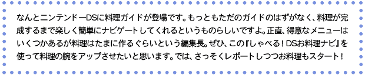
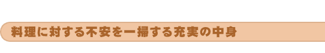
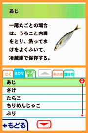
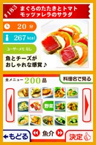
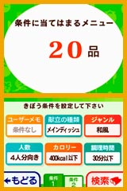
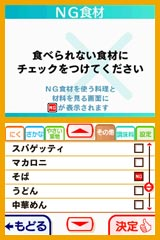
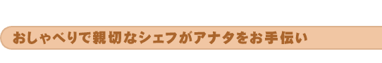
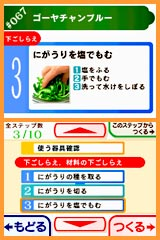
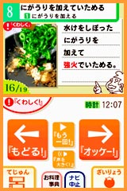

|
|  |
|  |
| 最初に音声ガイド用の各種設定を行ったあと、まずはお料理辞典をチェックしてみます。食材や器具、保存方法などが一覧で載っていて、これはなかなか助かりますね。というのも、料理を始めるときって知らないことが多すぎて、ついつい二の足を踏んでしまうじゃないですか。レシピのなかに初めて扱う食材があったり、専門用語が登場したりするだけであわててしまうというか……料理初心者の人は、まずはこの辺を読んでリラックスしてみるといいかもしれません。といっても無理におぼえる必要はなく、いざとなったらキチンと解説を見ることができるぞ、という安心感を抱けることがポイント。実際、料理中でもこれらの情報は呼び出して見ることができます。収録されている写真や動画は家庭料理の学校として名高い辻クッキングの先生方が監修しているだけあって、どれも美しくて見やすいですよ。ニンテンドーＤＳの画面に実写の料理が映っているのって、ちょっと新鮮な気分です。 |
| 料理を作る気分も高まってきたところで、いよいよ料理に挑戦！ まずは全200種類のメニューのなかから作りたい料理を選ぶのですが、色々な検索条件で探すことができます。たとえば冷蔵庫に食材があるなら、その食材中心のメニューを選んだり、苦手な食材を外したメニューを検索したり、和風や洋風といった料理ジャンルやカロリー、費用、食べる人の体調など、細かい条件からでも探せます。調理時間の目安を見ることもできるので、時間に余裕のない朝食は、10分以下の調理時間で簡単に作れるメニューを探すなど、ユーザーが希望するシチュエーションに合わせた検索ができる便利さがとってもいい。 |
|  |
| 今回は夏らしくヘルシーなゴーヤチャンプルーを作ってみようかな。食材を表示させた画面でニンテンドーＤＳを閉じてスリープモードにしつつ、食材の買出しへと出かけます。この辺は携帯型ゲーム機ならではの便利さですよね。食材にはタッチペンで操作できるチェックボックスがついているので食材の買い忘れもなし。食材と同時に必要な器具の一覧も見ることができるのは初心者の方にはうれしいかも。 |
|  |
| では、さっそくゴーヤチャンプルーを作ってみます。まず驚いたのがナビゲート役のシェフがとても詳しく音声ガイドしてくれること。シェフの言うとおりにしていけばゴーヤの塩もみや溶きタマゴの下ごしらえもテキパキと進んでいきます。まるで料理番組のアシスタントになった気分。そして、ここが秀逸なのですが、ガイドを次のステップへ進めるときはタッチペンの他にニンテンドーＤＳのマイクに向かって「オッケー！」と言うだけでも操作が可能です。これはキッチンに立つ人としては便利じゃないでしょうか。料理中って両手がふさがっていたり、手が濡れたりしている場合が多いですよね。実際、編集長が持っている書籍の料理ガイドはたくさんのページが濡れた跡でシワシワです（笑）。その点、マイクを使った音声入力なら火元を見ながらでも操作できて安心。 |
| 下ごしらえがすんだらフライパンを使って調理開始。料理のレシピも辻クッキングが監修しているため詳細な解説がなされます。初めて作るメニューはこのくらい細かくレクチャーしてもらったほうが不安がなくなると改めて実感しました。そして「オッケー！」の掛け声でリズミカルにシェフと対話するように料理を進めていくのは、なによりも楽しいです。そうそう、この親切なシェフはピエールさんという名前だとか。そして料理を完成させると、その料理がカレンダーに記録されていきます。周囲の料理熟練者にリサーチしてみると、料理に慣れてくると「今日は何を作ろうかな？」という点で悩んだりするみたいですね。食べさせる相手に聞いても「別になんでもいいよ」とか冷たくあしらわれてしまったり（笑）。その点、カレンダーで作ったメニューを一覧できたり、豊富な検索機能でメニューを探せたりできるのは日々の献立作りにとても役立つかも。料理に対するさまざまな不安をなくし、楽しく学び続けることができる、ニンテンドーＤＳならではの画期的な料理ガイドといえますね。 さて、そうこうする内にゴーヤチャンプルーが完成しました。じつは以前に別の料理ガイドを見ながらゴーヤチャンプルーを作ったのですが、とても苦くて食べられませんでした。今回はゴーヤの塩もみなど、ちゃんと下ごしらえをしたおかげで、おいしくできあがりました。次はどんなメニューに挑戦してみようかな。 |
|